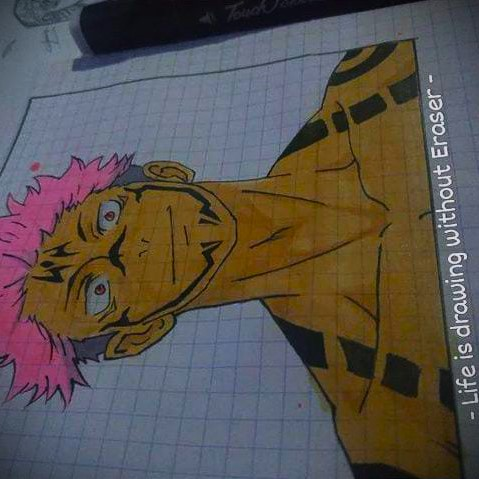
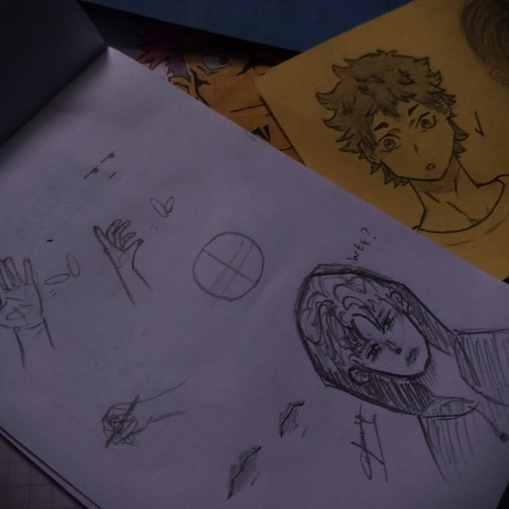
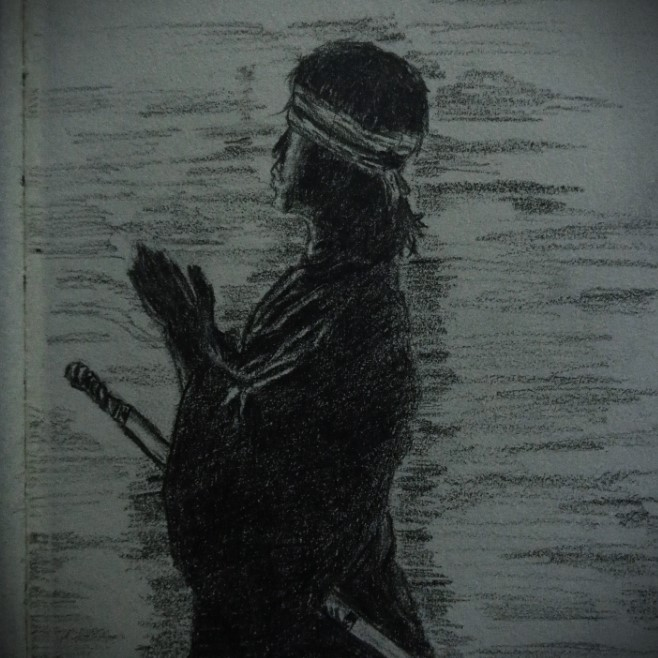
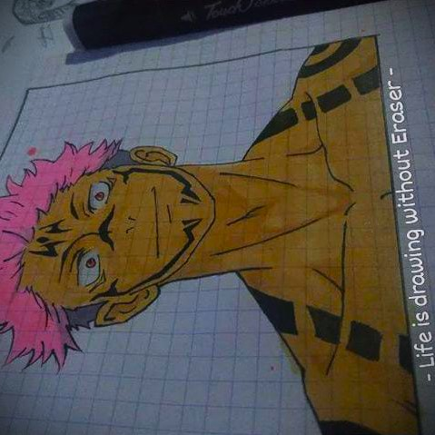
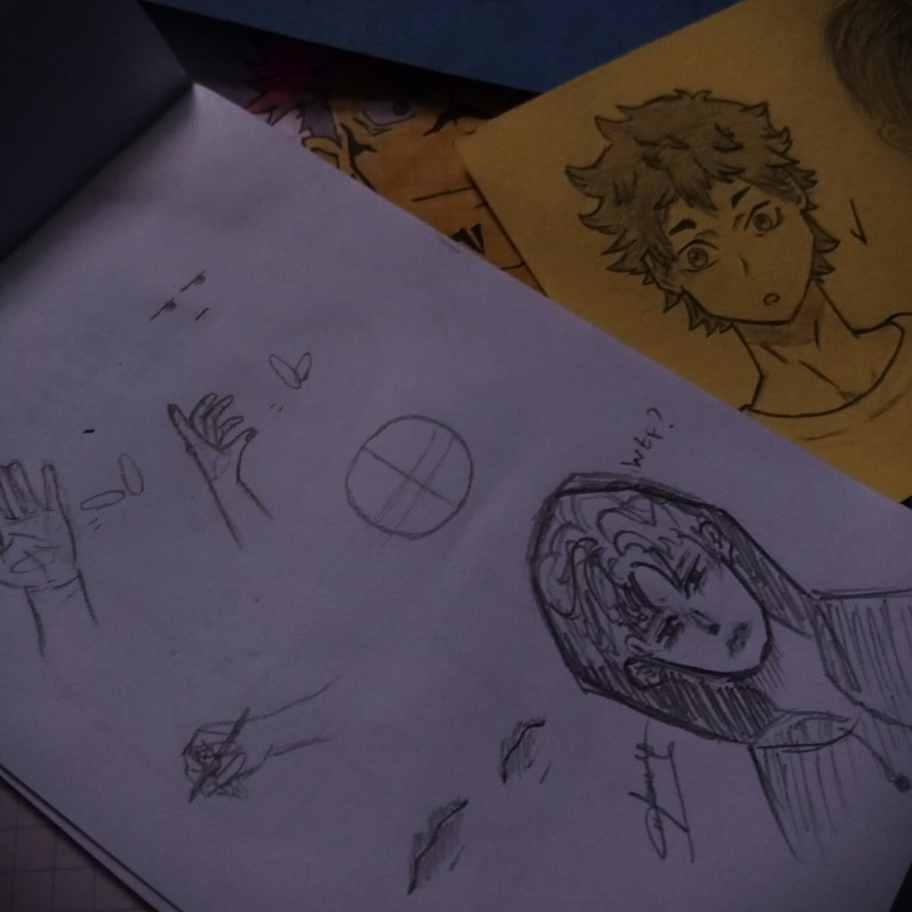
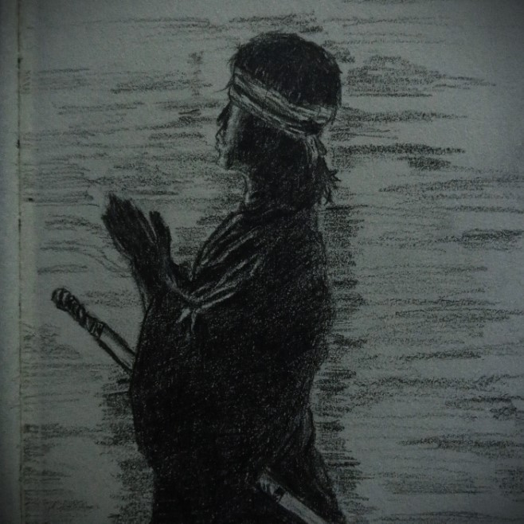

-Hobi-
Saya memiliki beberapa hobi, sebagai seorang anak laki - laki sudah pasti hobi saya bermain game, beberapa game yang
saya mainkan yaitu Mobile Legend, Free Fire, Minecraft, Guardian Tales, dan Growtopia. Sebenarnya masih banyak lagi game fps,
story, battle royale, open world, advanture maupun rpg yang saya mainkan tapi hp saya tidak muat untuk menampung game game tersebut:v
Selain hobi bermain game saya juga hobi menggambar, terkadang saya memposting hasil gambar saya di Discord maupun di Instagram. Berhubung saya ini wibu jadi kebanyakan gambaran saya berupa anime, tapi jika saya mau saya juga bisa menggambar pemandangan ataupun realistis.
Berikut adalah beberapa hasil gambaran saya :)
 




